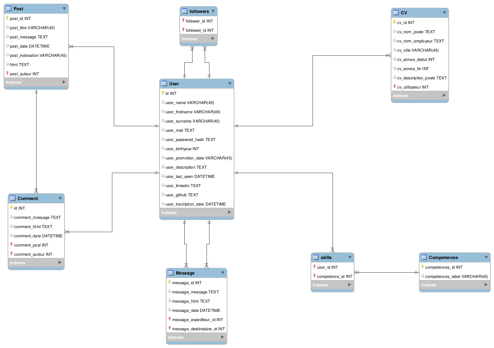

Brancher une base de données relationnelle fonctionnant sur un serveur local (PostGreSQL, MariaDB, MYSQL, etc.) à une application Flask. AU lancement de l'application, aucune erreur ne doit apparaître.
NB: Pour cet exercice, il n'est pas nécessaire de créer le modèle de la base dans Python, seule la connection est ici requise.
A partir du modèle de données ci-dessous, écrire le modèle de base de données correspondant (i.e. le fichier models/donnees.py).
NB: Seul ce fichier est demandé dans l'exercice, le développement de l'application ou le branchement à une base de données ne sont pas nécessaires.

Soit le DDL suivant de deux tables d'une base de données relationnelle PostGreSQL, écrire le modèle SQLAlchemy.
CREATE TABLE IF NOT EXISTS user
(
identifiant SERIAL,
nom VARCHAR(55) NOT NULL,
PRIMARY KEY (identifiant)
);
CREATE TABLE IF NOT EXISTS adresse
(
identifiant SERIAL,
user_identifiant INT,
adresse TEXT NOT NULL,
debut_validite TIMESTAMP NOT NULL,
fin_validite TIMESTAMP NOT NULL,
PRIMARY KEY (identifiant),
CONSTRAINT fk_user_identifiant
FOREIGN KEY (user_identifiant)
REFERENCES user(identifiant)
);
Reprenons le DDL de l'exercice précédent: modifier le modèle SQLAlchemy pour qu'il corresponde.
CREATE TABLE IF NOT EXISTS user
(
identifiant SERIAL,
nom VARCHAR(55) NOT NULL,
PRIMARY KEY (identifiant)
);
CREATE TABLE IF NOT EXISTS adresse
(
identifiant SERIAL,
user_identifiant INT,
adresse TEXT NOT NULL,
debut_validite TIMESTAMP NOT NULL DEFAULT CURRENT_TIMESTAMP,
fin_validite TIMESTAMP NOT NULL DEFAULT (DATE('now') + INTERVAL '10 year'),
PRIMARY KEY (identifiant),
CONSTRAINT fk_user_identifiant
FOREIGN KEY (user_identifiant)
REFERENCES user(identifiant)
);
A partir des données choisies pour le voir:
NB: il n'y aura pas de correction pour cet exercice, il est simplement ici pour aiguiller dans la conception de l'application; l'interrogation des données sera effectuée au prochain cours